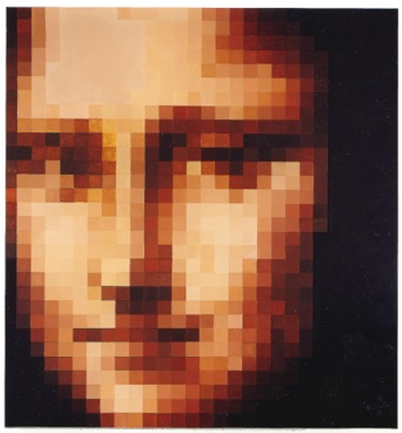
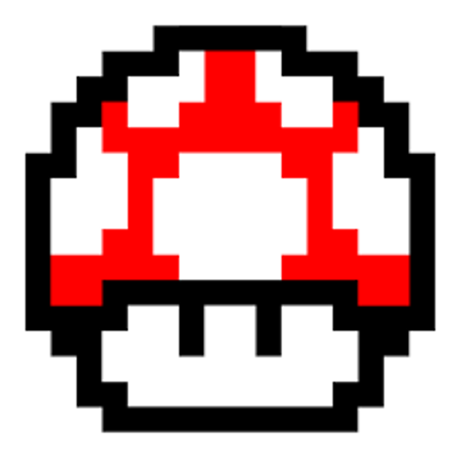
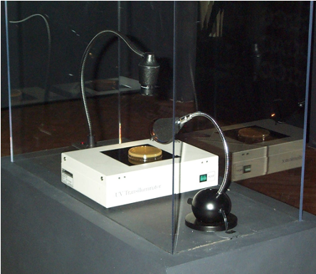
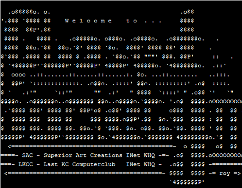

Exploration of Digital Art forms, focusing on the interrelationship of the digital technology on art and culture. The goal of the course is to weave technical skills into creative vision.
links to printable documents - Word | PDF
   From Wikipedia:
Digital art is an artistic work or practice that uses digital technology as part of the creative or presentation process. Since the 1960s, various names have been used to describe the process, including computer art and multimedia art.[1] Digital art is itself placed under the larger umbrella term new media art.[2][3] After some initial resistance,[4] the impact of digital technology has transformed activities such as painting, drawing, sculpture and music/sound art, while new forms, such as net art, digital installation art, and virtual reality, have become recognized artistic practices.[5] More generally the term digital artist is used to describe an artist who makes use of digital technologies in the production of art. In an expanded sense, "digital art" is contemporary art that uses the methods of mass production or digital media.[6]
The techniques of digital art are used extensively by the mainstream media in advertisements, and by film-makers to produce visual effects. Desktop publishing has had a huge impact on the publishing world, although that is more related to graphic design. Both digital and traditional artists use many sources of electronic information and programs to create their work.[7] Given the parallels between visual and musical arts, it is possible that general acceptance of the value of digital visual art will progress in much the same way as the increased acceptance of electronically produced music over the last three decades.[8] This is a studio course first and foremost. In keeping with the tradition of a studio arts course, the focus of the classroom experience will be on art and art-making. We will be specifically looking at trends and themes present within Contemporary Art by way of presentations, readings, and class discussion. Our time together in class is formatted as a combination of seminar and studio time including presentations of contemporary digital artworks and artists, discussions pertaining to assigned readings, software and technique tutorials, as well as group critiques. In addition to work time provided in class, outside work will be required. This course will focus on core intentional or inherent aspects of digital art. Some of these aspects are properties unique to digital media such as dynamic data, interactivity, or networking. Other aspects are subjects commonly taken up in the creation of digital art, such as telematic space, the architecture of time, the body and identity, decentralized authorships and hive-mind behavior. This class will introduce the core skills necessary to employ digital media in the generative and investigative context of art making.
The course is broken up into diverse topical units of approximately three weeks each. Within each unit the assignments, lectures, presented projects, and readings relate to the topic. These topics include: space, time, body + identity, data, and context. There are other topics / concerns inherent to the medium that will be with us throughout the semester including: authorship, remix, appropriation, composition, interface, input / output, and interactivity.
As you will likely realize throughout this course, much of the language and tradition to be found in other mediums of creative production / research are relatively settled… even if only as a foundation upon which new paradigms evolve. This is barely true, if at all, for the realm of Digital Art. Even the term “Digital Art” is problematic as it does not accurately depict or describe the practices, products, artifacts, and artists that will be observed this semester.
“Digital media art has been practiced and theorized within frameworks of more traditional media, such as television, avant-garde art, and fluxus art. However, the understanding of what is radically new about digital media often eludes such frameworks, because digital media challenges many of the paradigms which these frameworks are built upon. The need for an original framework which emerges from digital media is imperative for a new medium.”
- excerpt from the Thesis statement from DXARTS 201 syllabus, offered in the DXARTS Program at the University of Washington, Seattle, WA.
The medium in question for this course is better defined loosely by the terms “flux” or “emerging” in that it is constantly changing and evolving. If there are roots, they are bonded to the first transmission of signal over distance using electricity. Communication in the form of analog signals provide an appropriate starting point, but even this communication relied heavily on earlier forms of long-distance communication (smoke signals ≈ Morse code).
In order to succeed in this course, you will need the following: